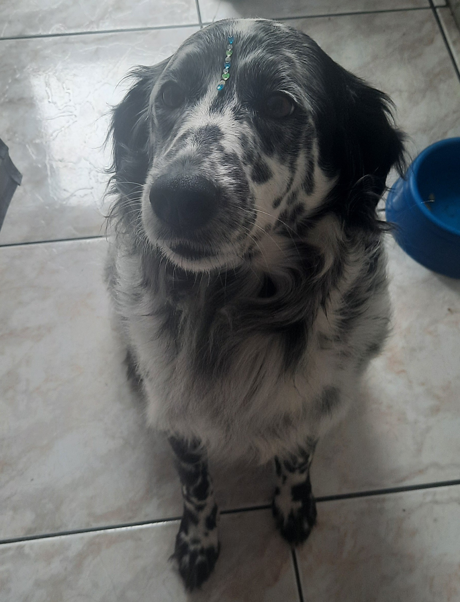

Projeto Patinhas 🐾

Transformando vidas, uma pata de cada vez!
A Patas do Bem é uma organização não governamental dedicada à proteção, ao resgate e ao bem-estar de cães em situação de abandono e vulnerabilidade.
Nosso objetivo é oferecer aos animais uma segunda chance, proporcionando cuidados, alimentação, atendimento veterinário e, principalmente, a oportunidade de encontrar um lar seguro e cheio de amor.
Acreditamos que todo cachorro merece amor, carinho e uma família para chamar de sua. Por isso, desenvolvemos iniciativas de resgate, recuperação e adoção responsável, além de ações para conscientizar a sociedade sobre a importância da proteção animal.
Nossa Missão
Promover o bem-estar dos cães, combater o abandono e incentivar a adoção responsável por meio de iniciativas solidárias e da participação da comunidade.
Entre em Contato
E-mail: contato@patasdobem.org
Telefone: (11) 99999-9999
Endereço: São Paulo - SP